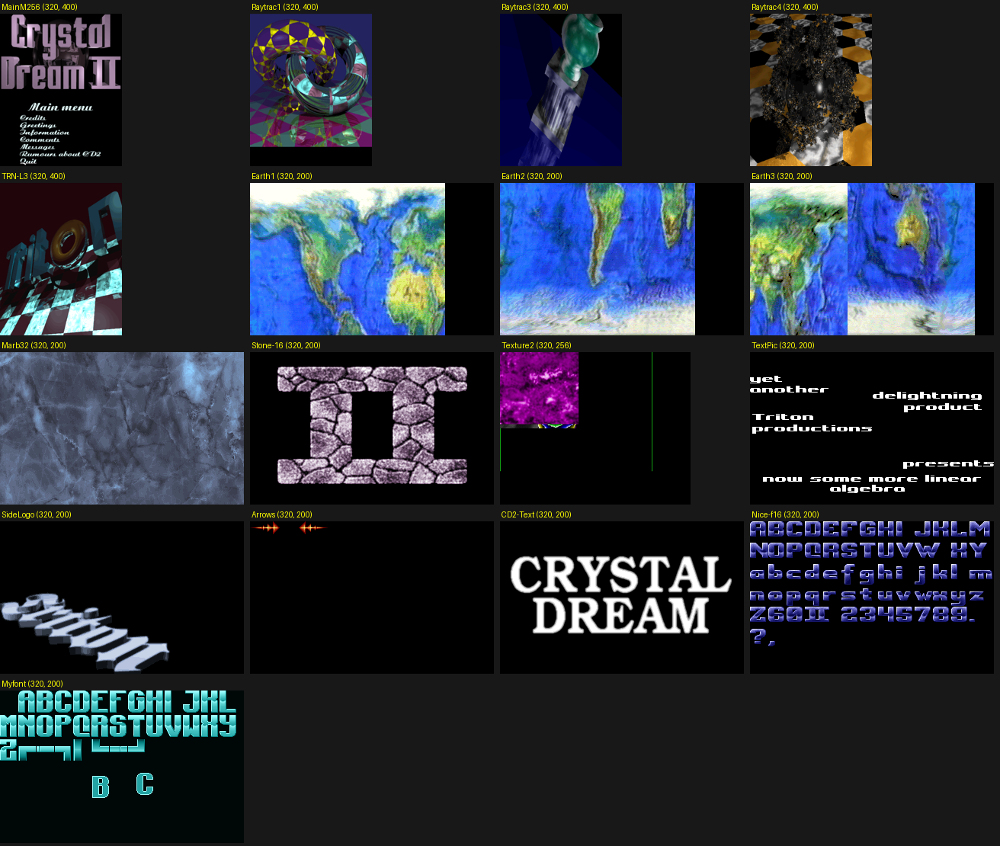
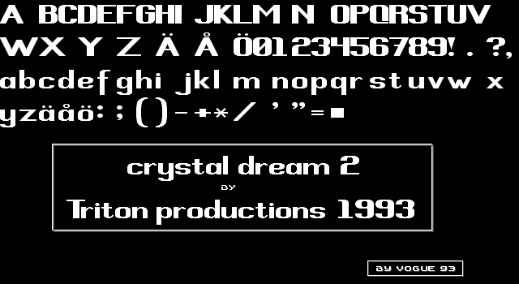
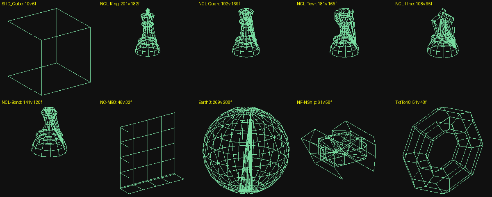

Crystal Dream II by Triton (credits as
printed by the demo's own Credits page: Mr.H and Vogue code, Vogue and
LizardKing music, Vogue graphics), released 30 May 1993, MS-DOS, 1st in
the PC demo competition at The Computer Crossroads 1993.
CD2.EXE is 3,154,579 bytes: a 79,177-byte packed module
plus a 3,075,306-byte private archive of 58 files. The authors say it is
"programmed in Borland Pascal 7.0 (Assembler of coz)", 43,800 lines,
running in protected mode, not under DPMI.
This write-up is shorter than those of the other ports, for one reason that comes first.
There is no JavaScript re-implementation of the effects in
this directory. README.md still lists
js/demo.js, js/demo3d.js and
js/modplayer.js from an earlier iteration; those files are
gone (only js/player.js and js/site.js remain,
and assets/orig/ holds no
cube_frames.bin/slime_frames.bin). What the
site publishes now is a recording of the original code
running:
tools/pm/ is a small virtual PC around the Unicorn CPU
emulator. It runs the unpacked program from its own entry point: Borland
runtime, its own protected-mode switch (it builds its
own GDT/IDT and sets CR0.PE; no DOS extender), its own timer ISR and
mixer, every scene.CD2.EXE itself, where the archive lives), conventional
memory, an XMS driver, the BIOS tick, a VGA model (sequencer, CRTC,
graphics controller with write modes 0-3, latches, read modes 0/1,
attribute controller, DAC; tools/pm/vga.py), the 8254
timer, the 8259, the keyboard and the printer port.PIT_HZ = 1193182); a video frame is
PIT_HZ / 70.0865 counts (449 lines at 31.47 kHz);
the CPU is assumed to run 30 million instructions per
second (CPU_IPS, overridable by environment). The
retrace flag and the sampling of the display follow that clock.pm/record_full.py records every retrace (picture,
palette, CRT registers) and the stream of bytes the demo writes to the
Mono-Lpt DAC (port 378h). The keys that pick the sound device and mixing
rate in the setup menu are scripted (DOWN DOWN ENTER: Mono
Lpt 1, then DOWN x3 ENTER: 44000 Hz). When the demo reaches
its main menu the process forks one child per menu entry and records
what follows. pm/export_demo.py packs the result.js/player.js) decodes
video.bin (chunks of 30 frames, raw deflate, palette and
pixels XOR-delta against the previous frame) and
audio.flac. It draws nothing and mixes nothing itself.
meta.json of the main run: 38,201 frames, 23,378,483 audio
samples at 43,918 Hz, audio starting 12.68 s into the video.index.bin, the audio source
is restarted at T - audio_t0. Chapter buttons come from
chapters_main.json: Setup 0 s, Intro 18, Linear algebra 54,
Objects 63, Cube and magic block 90, Crystals 162, Plasma 180, Fractal
zoom 198, Tunnel flight 252, Torus 315, Pictures 333, Earth 342,
Scroller 369, Chessboard 405, Main menu 522.Aspect ratio. The CRT registers are recorded with
every frame (index.bin stores the picture rectangle on a
4:3 screen as four floats per frame). Windowed effects (the tunnel's
black bars, the 200x200 fractal window) keep the size and the borders
they had on a monitor, and the whole thing is shown at 4:3. Mode 13h/X
pixels are 1.2 times taller than wide on such a screen.
What is exact and what is not.
| piece | status |
|---|---|
| the code that draws every scene | the original instructions, executed by Unicorn. Not re-written |
| frames, palettes | what that code wrote into the modelled VGA, per retrace |
| plasma table, frame, palette routine | re-implemented in numpy as a check
(tools/run_plasma.py): 0 differing entries / bytes /
components against the emulated routines (re-run for this write-up) |
| fractal zoom pixel map | extracted from the emulated scaler into
assets/orig/fractal_map.bin; the numpy formula reproduces
the emulator with 0 differing pixels at z = 48, 53, 400, 1600, 3205,
6001, 7599 (re-run: the regenerated map is byte-identical to the
committed one) |
| pacing (frames per scene, anything driven by elapsed time) | assumed: 30 MIPS CPU, 70.0865 Hz retrace. Scenes that adapt to frame time can differ at another CPU speed |
| sound | one run, one setup choice (Mono Lpt, 44000 Hz requested). Which module plays in which scene is not documented |
| the VGA, PIT and monitor models | mine, not a real card; an effect that depends on an unmodelled corner would differ. The monitor model has two flyback constants tuned so that the standard 320x200 mode fills the screen |
| comparison with real hardware | none. The site compares with screenshots of the original in DOSBox 0.74; no pixel diff is claimed |
Earlier scene-by-scene harnesses are kept in tools/
(run_intro.py, run_title.py,
run_cube.py, run_slime.py,
run_tunnel.py): each runs one scene loop alone (stubbing
the heap, the retrace/flip calls and the music tick) and dumps its
frames.
The tail of the EXE is a directory plus data, decoded by
tools/extract.py:
EOF-4: dword 0x135A9, where the overlay starts.
EOF-6: word file count (58) XOR 0x55. The directory is 58 x
21 bytes ending there, XOR 0x55: a length-prefixed 12-char name, dword
offset, dword size. File i sits at EOF - offset;
files are stored in reverse order.plain[j] = ((raw[j] ^ 0x5A) + 21*floor(j/64)) & 0xFF,
j = offset inside the file. A plain XOR gives pictures with
horizontal stripes because of the rolling term..MOD, 5 .TGA, 13
.LBM, 10 .RAW, 23 .TVO listed
(the site counts 24), 2 .TVW, MegaFrac.DAT.
Offsets below are "EOF - offset", from the site's directory table.The first scenes use VGA 16-colour planar mode (each plane is one bit of the colour index, one byte holds eight pixels); the later 3D scenes use unchained 256-colour Mode X. What I can back with the code:
0xC150, in the intro unit) writes
GC[8]=0xFF (bit mask), GC[5]=0x0B (write mode
3 and read mode 1) and GC[7]=0
(colour-compare don't-care), then GC[0]=0x0F (set/reset). I
did not trace which routine this belongs to, so I do not say what it
draws.run_cube.py models write modes 0-3 and the barrel
shifter for exactly this reason; the cube scene writes through two VRAM
pages 0x4000 bytes apart and flips by CRTC start address.0x15980): it converts a 4-plane font bitmap
(planes 8000 bytes apart, Nice-f16.LBM) to pixels with a
colour base per line. run_title.py renders
" View the inside", " of a cube",
" &through a", " magic block" with
it.0xB41D was run
under emulation, but I did not reverse the intersection maths, so there
is no algorithm section for it.The one effect understood end to end. Routine at image
0x3A82; table builder at 0x3BD1; palette
routine at 0x3A10.
Table.
T[i] = round(128 + 127*sin(2*pi*i/1024)), 1024 bytes, built
with the Borland real-number runtime. The emulated loop and the float64
formula agree on all 1024 entries.
Frame. For row pair r in 0..99 and byte
column xb in 0..79:
v = (T[(p1 + 2*r + 7*xb) & 1023] + T[(p3 - 3*r) & 1023] + T[(p4 - r) & 1023]) & 255
# v is written as four identical pixels (all four planes enabled) on two linesIn the assembly the three row terms move as [bp-2] += 2,
[bp-6] += -3, [bp-8] += -1 after each row
pair, wrapped with and ..., 0x3ff (image
0x3B66..0x3B7C). The inner loop produces 8 bytes per trip
(two dwords), 10 trips per row pair = 80 bytes, and each dword is stored
twice, at [es:di] and [es:di+0xA0] (a 160-byte
line pitch): that is the "two identical lines". The screen costs 80 x
100 table sums, not 320 x 200.
Palette. Called with three phases, a count (256) and a level:
pal[i] = [((T[(phase + 4*i) & 1023] * level) & 0xFFFF) >> 10 for phase in (pr, pg, pb)] # 6-bit DAC valueslevel = 256 gives T/4, 0..63. The routine
ends by storing 0x100 in [0x6684], the count of palette
entries the next retrace call uploads. I have not decomposed how much of
the visible motion comes from the table phases and how much from the
palette.
Check: python3 tools/run_plasma.py runs the three
original routines under Unicorn against numpy versions: table 0
differing entries; frame 0 differing bytes over 12 random phase sets;
palette 0 differing components over 12 random (phase, level) sets.
Nothing is iterated at run time. MegaFrac.DAT is four
VGA planes x 1024 columns x 128 rows of Mandelbrot iteration counts (8 x
64 KB tiles) plus a 16 KB per-column table the demo copies into its code
segment. Interleaving the planes gives a 4096 x 128 strip,
log-scaled horizontally. The scene builds the column
map with real numbers at start-up (loop at 0x89B1):
T[i][j] = round(i/8 + 68.1 * ln((j + 1) * 2**24 / 500)) # i = 0..7 (sub-step), j = 0..127
col(j) = max(0, T[z & 7][j] - (z >> 3)) # z = zoom counterOne octave is 68.1*ln2 = 47.2 strip columns, so a scroll
of 944 columns is 20 octaves = 2^20 = 1,048,576, the "zoomfactor of
1048576" of the authors' Comments page. Zooming in is
z += 1; z & 7 picks one of eight shifted
maps so the motion is smooth between whole columns.
Each screen column copies a vertical slice of the strip scaled by a
per-column record (asm write-up: a 4x unrolled movsb /
adc esi,ecx loop). The output window is 200 x 200 pixels at
x = 60..259, written to even lines of the 400-line Mode X page only (the
extraction script asserts y % 2 == 0).
tools/extract_fractal_map.py hooks the emulated scaler
and records, for each of the 40,000 output pixels, its column index
j, tile k and source offset S (4
bytes per pixel, assets/orig/fractal_map.bin, 160,000
bytes), giving the closed form
c = col[j]
tile = 2*k + ((c >> 9) & 1) # tile segment chosen by bit 9 of the column index
addr = (S + (c << 7)) & 0xFFFF # 128 bytes per strip column
pixel = megafrac[tile*65536 + addr]which matches the emulator with 0 differing pixels at the seven zoom values above. The shipped player does not use this map (it plays the recording); it is what a standalone port would use.
0x248B, code segment 1240h). The authors' Comments page
says the event must run at 70 Hz to be worth looking at; the site's
article quotes their remark that the drawing of the current frame uses
previously drawn frames and describes a 120 x 100 render reused from 40
earlier buffers picked by sine tables. I did not re-verify those
two numbers. The standalone harness sets the tick counter at
DS:667E from the frame count (tick = int(frame * 50 / 70)):
a harness assumption, not a measured property.0xBA92, code segment 1B7Ah). Unchained 320x200 Mode X, two
pages 0x4000 apart; world NFly2.TVW plus
NF-Seg01..07.TVO and NF-NShip.TVO; the black
bars are the scene's clip window (article). The scene's hard-coded video
selectors 30h/40h had to be patched to the VGA segments in the
standalone harness.TxtTori8.TVO and the Triton
logo; not analysed beyond the chapter markers.The article also describes 8.8 fixed-point texture walking with one
shade-row lookup per pixel (Earth, chessboard) and a 5:4
pre-multiplication of x in the projection. These are readings of the
disassembly in the article that I did not independently re-check; treat
them as plausible, not proven. Flat faces use the rep stosd
span fill shown in the asm write-up.
Raytrac1/3/4.TGA and
TRN-L3.TGA, pre-rendered stills (credits: podium with vase
and sphereflake by Mr.H; toruses and Triton logo by Vogue), decoded and
shown by the demo, faded with the palette. Displayed on a 4:3 screen
they look tall and soft, as designed.Earth3.TVO with textures
Earth1/2/3.LBM (the authors say 264 textured polygons),
with a scroller.NCL-*/NCD-*
models (light/dark King, Queen, Tower, Horse, Bond) on
Marb32.LBM; the authors: 1,837 coordinates, 1,628 polygons,
one moving light.Fades are DAC rewrites: the plasma palette routine fills a 768-byte
buffer at DS:EE00 and flags a count; the retrace/flip call uploads it
(the standalone harness' _upload copies [6684]
entries from DS:EE00 to the DAC). 768 bytes instead of 64,000 pixel
writes.
Credits, Greetings, Information, Comments, Messages, Rumours are not
text. Each line is a list of 4-byte records
(glyph offset in the font sheet, destination byte, sub-pixel shift | width << 4)
ended by 0xFFFF, blitted from a 640-pixel 1-bit sheet
(EndFont2.LBM) with a per-pixel rotate (routine at image
0xFB4). The sheet's glyph cells are kerning pairs (a cell
shows a letter and the start of the next; the record's width crops it),
so a record's character is the first letter of its cell; that turns the
pages back into text (tools/render_pages.py). The
Information page contains four private addresses and phone numbers from
1993; they are blanked in the shipped text and images.
All images below were decoded from the archive by
tools/extract.py + tools/convert_assets.py
(TGA and IFF to PNG) and live in assets/orig/. "Colours" is
the number of distinct RGB values actually present in the converted PNG
(counted for this write-up), not the declared palette size. Preview
sheets generated from those PNGs are in figures/
(below).
| file in the archive | size in archive | decoded PNG | colours used | use |
|---|---|---|---|---|
| MainM256.TGA | 128,786 | MainM256.png 320x400 |
231 | main menu (Mode X double height) |
| Raytrac1.TGA / Raytrac3.TGA / Raytrac4.TGA | 128,786 each | 320x400 | 228 / 242 / 243 | raytraced stills |
| TRN-L3.TGA | 128,786 | 320x400 | 234 | raytraced Triton logo picture |
| Earth1/2/3.LBM | 49,194 / 52,650 / 58,972 | 320x200 | 249 / 248 / 252 | Earth texture pictures |
| Marb32.LBM | 51,718 | 320x200 | 20 | chessboard marble |
| Stone-16.LBM | 20,446 | 320x200 | 16 | 16-colour stone texture |
| Texture2.LBM | 20,152 | 320x256 | 121 | texture |
| TextPic.LBM | 7,780 | 320x200 | 3 | text picture |
| SideLogo.LBM | 9,268 | 320x200 | 14 | logo |
| Arrows.LBM / CD2-Text.LBM | 3,068 / 16,388 | 320x200 | 16 / 16 | arrows, CD2 text |
| Nice-f16.LBM | 17,896 | 320x200 | 16 | the 16-colour font used by the planar scenes (converted to 4 planes
by run_title.py) |
| Myfont.LBM | 14,692 | 320x200 | 35 | font |
| EndFont2.LBM | 40,208 | 640x350 | 4 | 1-bit-style sheet for the text pages (section 8) |
| IntroBG1/2.RAW | 64,768 each | not converted by the site tools to PNG here | - | 768-byte 8-bit palette + 320x200 pixels (a sound card, a mixing desk, per the site) |
| Stndrd8.RAW | 1,024 | - | - | 8x8 bitmap font, 128 glyphs (the site notes a VOGUE logo glyph) |
| MegaFrac.DAT | 540,672 | strip.png 4096x128 (grey) |
8 planes of 64 KB + 16 KB table | fractal strip (section 4) |


Formats: the .TGA are 8-bit colour-mapped 320x400; the
.LBM are IFF ILBM (4 planes) or PBM (8-bit) with ByteRun1
compression, palettes read from the file. The site lists 13 LBM and 5
TGA, all decoded. The title card's palette is in
assets/orig/title_pal.json and its indices in
title_idx.png (61 colours used).
3D meshes (tools/read_tvo.py, objects
exported to assets/orig/objects.json by
export_data.py; counts below are of that export, which
drops faces referencing out-of-range vertices):
| object | vertices | faces |
|---|---|---|
| SHD_Cube | 10 | 6 |
| NCL/NCD-King | 201 | 182 |
| NCL-Quen / NCD-Quen | 192 / 189 | 169 |
| NCL/NCD-Towr | 181 | 165 |
| NCL/NCD-Hrse | 108 | 95 |
| NCL/NCD-Bond | 141 | 120 |
| NC-MB3 / NC-MB4 | 46 | 32 |
| Earth3 | 269 | 288 (the authors say 264 polygons; I did not reconcile the difference) |
| NF-NShip | 61 | 58 |
| TxtTori8 | 51 | 48 |
.TVO layout: header words A..D (section offsets), 256 x
RGB palette at 0x40 (a grey ramp with steps of 2 for shaded objects),
faces 16 bytes (flags 0x140 polygon / 0x80 sentinel, v0..v3, colour),
vertices 6 bytes int16 (cube = +-9830). Archive sizes: Earth3.TVO
15,620; NCD-King 8,236; NC-MB3/4 2,874; NF-NShip 3,252; TxtTori8 3,688;
SHD_Cube 1,202. SinTab.RAW (8,192 bytes) holds 4 x 1024
int16 sine/cosine tables.

The chess pieces other than the king show a few long stray edges in this view; the faces are drawn as exported (first four indices, repeats collapsed) and I did not check whether those come from the data or from that reading.
.TVW world
format; the role of the polygon fillers' patched code (partially seen in
the asm write-up); the packer's provenance;extract_fractal_map.py hooks the scaler.